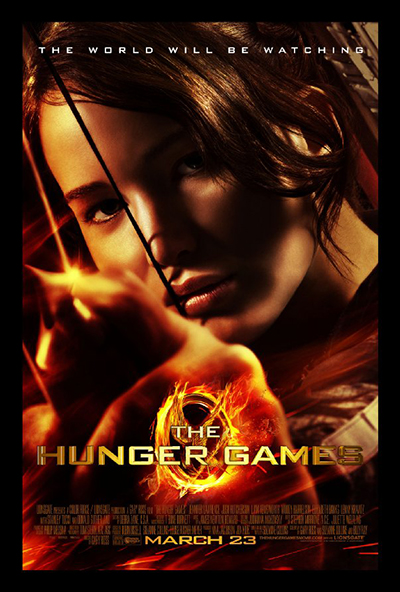
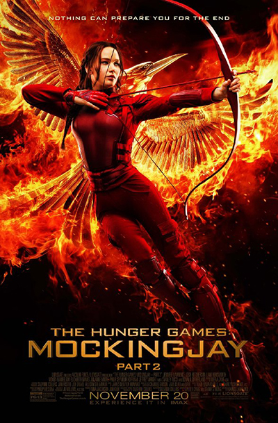

|  |
THE HUNGER GAMES(2012)Katniss Everdeen voluntarily takes her younger sister's place in the Hunger Games, a televised competition in which two teenagers from each of the twelve Districts of Panem are chosen at random to fight to the death. |
THE HUNGER GAMES: CATCHING FIRE(2013)Katniss Everdeen and Peeta Mellark become targets of the Capitol after their victory in the 74th Hunger Games sparks a rebellion in the Districts of Panem. |
|
THE HUNGER GAMES: MOCKINGJAY PART 1(2014)Katniss Everdeen is in District 13 after she shatters the games forever. Under the leadership of President Coin and the advice of her trusted friends, Katniss spreads her wings as she fights to save Peeta and a nation moved by her courage. |
|
THE HUNGER GAMES: MOCKINGJAY PART 2(2015)As the war of Panem escalates to the destruction of other districts, Katniss Everdeen, the reluctant leader of the rebellion, must bring together an army against President Snow, while all she holds dear hangs in the balance. |
 |